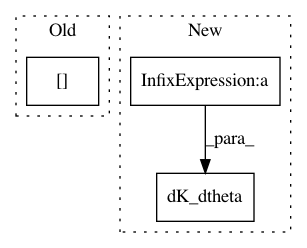

ba84a43ea392c03234a04a851088da0d15a5a76d,GPy/models/sparse_GP_regression.py,sparse_GP_regression,dL_dtheta,#sparse_GP_regression#,147
Before Change
return np.squeeze(dA_dbeta + dB_dbeta + dC_dbeta + dD_dbeta + dE_dbeta)
def dL_dtheta(self):
dL_dtheta = (self.dL_dpsi0 * self.dpsi0_dtheta + (self.dL_dpsi1[:,:, None] * self.dpsi1_dtheta).sum(0).sum(0)
+ (self.dL_dpsi2[:, :, None] * self.dpsi2_dtheta).sum(0).sum(0)
+ (self.dL_dKmm[:, :, None] * self.dKmm_dtheta).sum(0).sum(0))
return dL_dtheta
After Change
def dL_dtheta(self):
//re-cast computations in psi2 back to psi1:
dL_dpsi1 = self.dL_dpsi1 + 2.*np.dot(self.dL_dpsi2,self.psi1)
dL_dtheta = self.kern.dK_dtheta(self.dL_dKmm,self.Z)
dL_dtheta += self.kern.dK_dtheta(dL_dpsi1,self.Z,self.X)
dL_dtheta += self.kern.dKdiag_dtheta(self.dL_dpsi0, self.X)
return dL_dtheta
In pattern: SUPERPATTERN
Frequency: 3
Non-data size: 3
Instances
Project Name: SheffieldML/GPy
Commit Name: ba84a43ea392c03234a04a851088da0d15a5a76d
Time: 2012-11-30
Author: james.hensman@gmail.com
File Name: GPy/models/sparse_GP_regression.py
Class Name: sparse_GP_regression
Method Name: dL_dtheta
Project Name: SheffieldML/GPy
Commit Name: d36ba011ef33102d9c9daf304c0d3565409a8fd7
Time: 2013-07-19
Author: james.hensman@gmail.com
File Name: GPy/kern/parts/linear.py
Class Name: Linear
Method Name: dpsi2_dtheta
Project Name: SheffieldML/GPy
Commit Name: 652b3ce2c6870a2357d537c4b87bfe3d300cbc66
Time: 2013-05-10
Author: n.durrande@sheffield.ac.uk
File Name: GPy/kern/prod.py
Class Name: prod
Method Name: dK_dtheta